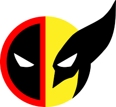
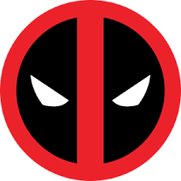
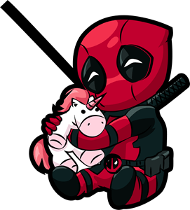

|
MARVEL |
Biografia Deadpool
Historia fandom ¿Quien es Deadpool? |
Deadpool es un personaje ficticio, mercenario y anti-héroe, el cual aparece en los cómics publicados por Marvel Comics. Creado por el artista Rob Liefeld y el escritor Fabian Nicieza, Deadpool apareció por primera vez en New Mutants (vol. 1) #98 (1991). Como un mercenario mentalmente inestable y desfigurado, Deadpool apareció originalmente como un villano en una edición del cómic New Mutants, y más tarde en ediciones de X-Force. Desde entonces, el personaje ha protagonizado varias series en curso, y comparte títulos con otros personajes, como Cable. El personaje, conocido como el "Mercenario con Boca" ("Merc with a Mouth" en inglés), es famoso por su naturaleza comunicativa y por su tendencia a "romper la cuarta pared", lo cual es utilizado por los escritores para un efecto humorístico.    |
|---|---|
|
Alumno: Miguel Angel Montoya Cruz, Carrera: Ingenieria en sistemas computacionales, 5°Semestre, Grupo: L, Numero de control: 22690202 |
|